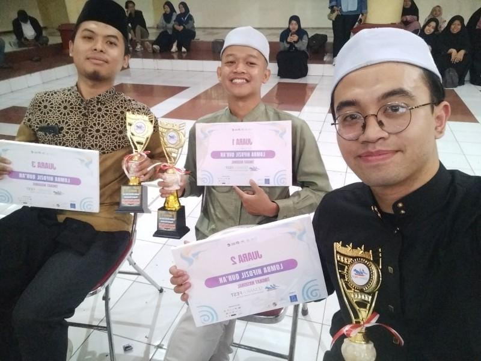
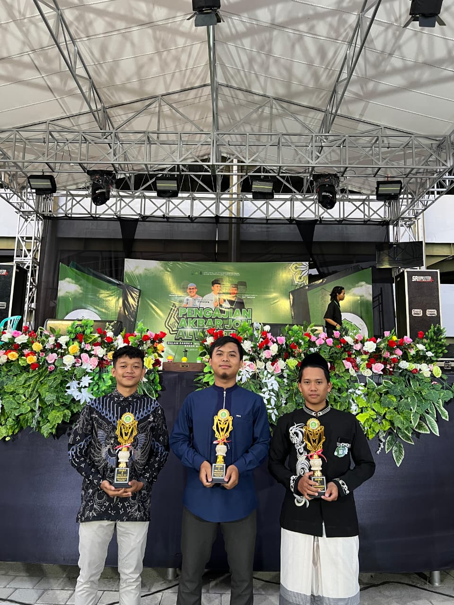
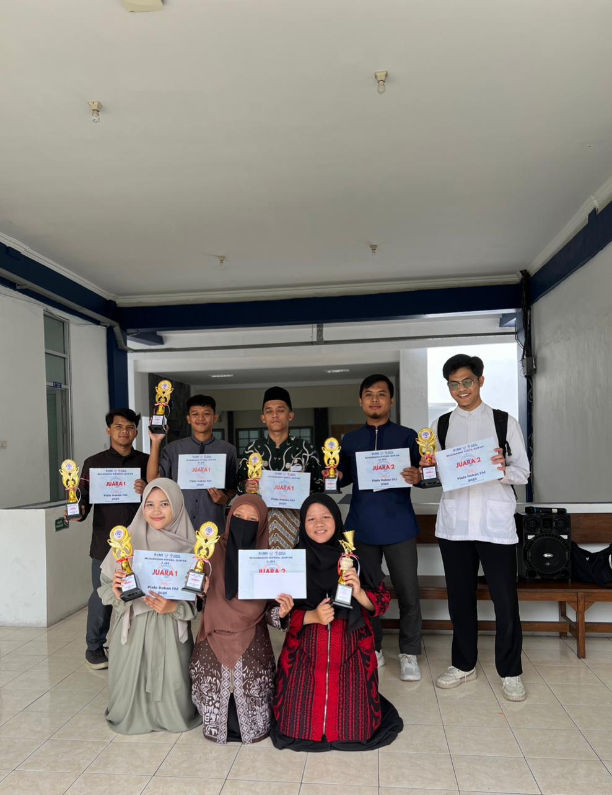
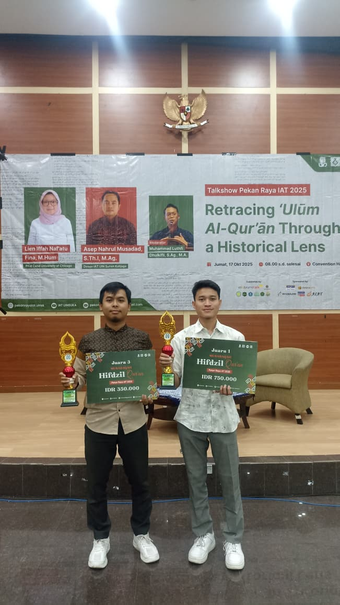

★
Dokumentasi
Journey KSQ






Membina · Mendelegasikan · Berprestasi
Wadah pengembangan kemampuan Al-Qur'an dan delegasi terbaik untuk ajang MTQ dari tingkat kampus hingga nasional.
خَيْرُكُمْ مَنْ تَعَلَّمَ الْقُرْآنَ وَعَلَّمَهُ
"Sebaik-baik kalian adalah yang mempelajari Al-Qur'an dan mengajarkannya." — HR. Bukhari
Menjadi pusat pembinaan Al-Qur'an yang melahirkan generasi unggul, berintegritas, dan berprestasi dalam bidang Al-Qur'an.
Membina kemampuan anggota, mendelegasikan peserta terbaik ke MTQ, serta membangun budaya cinta Al-Qur'an di lingkungan akademik.
KSQ terbuka untuk seluruh mahasiswa/siswa Universitas Muhammadiyah Surakarta yang ingin mengembangkan diri dalam bidang tilawah, tahfidz,tartil, cerdas cermat, dan karya tulis.
📌 Catatan Penting
Cabang lomba dapat disesuaikan dengan penyelenggara MTQ yang dituju (tingkat kampus, kota, provinsi, hingga nasional). KSQ menyiapkan delegasi untuk semua cabang yang tersedia.




Pendaftaran Minat
Anggota mendaftarkan diri sesuai cabang lomba yang diminati melalui formulir yang disediakan KSQ.
Asesmen & Pemetaan
Tim pembina melakukan pemetakan kemampuan dan potensi setiap calon delegasi.
Pelatihan Intensif
Calon delegasi mengikuti program latihan khusus sesuai cabang, dipandu oleh pembimbing profesional.
Kesempatan mewakili UMS di MTQ tingkat kampus, kota, provinsi, hingga nasional.
Dibimbing langsung oleh orang yang berpengalaman dari alumni juara MTQ.
Terhubung dengan komunitas pecinta Al-Qur'an lintas lembaga dan daerah.
Mendapat insentif untuk juara 1,2,3 dan biaya transportasi.
Bersama teman-teman yang memiliki semangat yang sama dalam mendekatkan diri kepada Al-Qur'an.
🕐 Syarat Umum
Beragama Islam · Memiliki niat dan komitmen · dan Siap mendedikasikan waktu untuk latihan dan delegasi lomba.
Jadilah bagian dari generasi Qur'ani yang berprestasi. Daftarkan dirimu sekarang dan mulailah perjalanan indah bersama Al-Qur'an.
📝 Daftar Sekarang